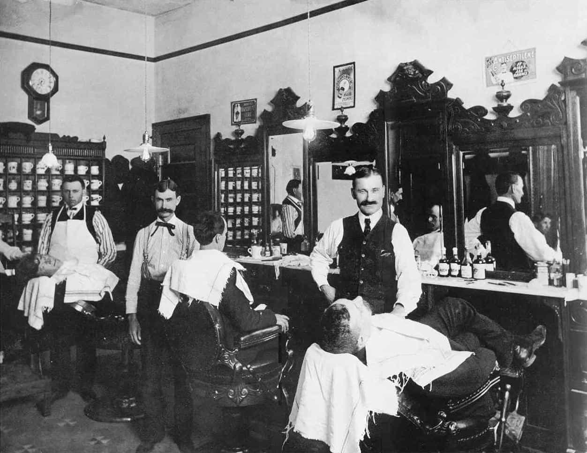

< < < Back
Why Men Need To Save The Barbershop Culture – Return Of Kings
During the July War of 2006, my father insisted on taking me to his barber shop instead of the safety of our house where my mother’s family came to take refuge. The shop stood a mere five minutes away from the concentration of raids and bombings.
I never questioned him. As man who had weathered a 35-year-long civil war, my faith in him was absolute. Later on in life, when I asked him for the reason of his decision to visit the barber shop every day during the summer war, he told me it was necessary for my growth as a man. War gives you character, as tragic as it may be, he would say. I didn’t want your memories of war to be that of crying women, huddled together in prayer and fear.
And today I understand.
The men at the barber shop were hardened veterans; former militia commanders who returned to civilian life after the war ended, soldiers, key figures of the families that populated the area where my father grew up, the odd politician from time to time, and the barber and his assistants. As I sat there, at least three decades younger than the least senior of the men, I observed how they freely debated politics, military tactics, money, sports, fucking, and social issues. The news, accompanied by the classics of the older generation of singers and composers on the radio, would background games of backgammon, Turkish coffee, and hookah smoking.
Today, the purely male barber shop is almost extinct. Unisex salons, which naturally boast a predominantly female clientele, are almost all that is left. Of the few purely male barber shops that remain, most are trend oriented, with a negligible defining male character. If such extinction is ever to occur, men would have lost one of their greatest strongholds in the socio-geographic fabric.
Where once upon a time the barber shop was a cocktail of what young men need for their mental and cultural growth and evolution, the modern-day unisex salon is no more than an environment of malicious female gossip, generic radio crap, and trend-conforming hairstyles that in no way promote masculinity.
Helping perpetuate the existence and success of such decadent establishments not only serves to undermine a much-in-need-of-protection masculine legacy to the point of irrelevancy and extinction, but also destroys an element that might contribute to realizing a generation of manly youth. Making the conscious choice to go to a unisex salon to have your hair handled by naturally under-qualified women or effeminate male stylists is a blow to man and his role in society.
What must be done is simple. The barber shop must be reclaimed, protected, and promoted. Here are four ways this can be done:
1. Make the effort to become a regular client of a purely male barber shop
Despite the universal demonization of classic masculinity and its decline in the free market as an influencing factor, one can still, with effort and conviction, find its last remaining bastions with vigilance and observation. They’re out there, and a few minutes expended walking, in the car, or in public transport to patronize these places won’t hurt.
Pro tip: They’re usually in the older parts of the commercial centers (the lesser streets), and well-known neighborhood corners. Once upon a time a landmark of a neighborhood, they’d be highly recognizable and part of the local culture and memory. Ask around.
2. Try to frequent the shop also in a none-client capacity, merely as a visitor
Male ssocializing is blessedly easy, especially with the more classic male adult. There is no distrust or malicious jealousy that female ssocializing has enjoyed since the dawn of sentience. Men have a natural tendency to respect each other, even in the most heated of competitive situations. So as it is easy to establish social ties, it will become easier to frequent the shop as a man who simply wants to check on the lads, have a drink, see what’s up.
3. Introduce your own social circle to the shop
Not only will you make the shop more familiar to yourself, but by expanding its clientele, you are helping the business. Helping the business grow will ensure its survival, naturally. You are not promoting, you are contributing. Contributing will help maintain this manly legacy. Additionally, frequenting an environment of peers not only builds character by a desirable set of influences, but also aids in reinforcing the tenets of the said environment on whoever frequents it.

4. Advocacy
Even to the odd stranger, advocacy can have great effects and positive influences. One does not need the rhetoric of a veteran politician to compel others to think and act differently. Simple truths spoken with conviction are enough. Once men receive hearsay of an establishment that safeguards the stylistic dignity of man’s coiffeur, one or two are inevitably bound to frequent the aforementioned establishment to have their hair tended to and be surrounded by masculine men.
The Barbershop Culture may seem at first as an innocuous thread in the fabric of the social tapestry. But properly examined and reviewed, such an environment can yield many necessary details that can aid in the formation of a strong, masculine identity. Like a layer of paint, glazed in obscurity to grant other colors strength and depth, the barbershop paints a man brighter and deeper.
Don’t Miss: Pax Dickinson And The Culture Of Tolerance


{kind=link}
{kind=link}
{kind=link}